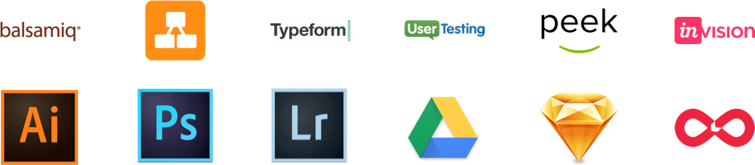
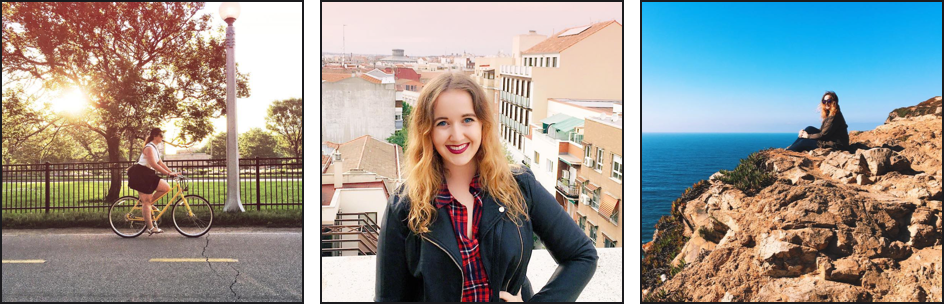

My name is Melissa, and I assume this is a commonality between me and many designers my age, but my path to UX and UI began circa 1999, when I first began coding Geocities websites with HTML4. While the content might differ from person to person (and my content was always, without fail, about the Backstreet Boys)(Not 'N Sync)(Ever), the principles were the same. Geocities launched a generation of designers and developers; my realization that this happened just came a little late. My path to UX and UI was a winding one. Between age 14 and 22, I dabbled in everything. By the end of college, I'd majored in everything two schools had to offer, graduated with a degree offering dubious practicality (International Studies and Photography), and decided to ship off to Panama as a Peace Corps volunteer. In Panama, I had my first taste of ethnographic research, as I observed my community in their day-to-day lives, wrote down everything piece of data, and tried my best to not interfere. Post-Peace Corps, I spent a significant period of time teaching English to Speakers of Other Languages in Panama, South Korea, and the United States. My love for languages brought me back to academia, where I developed a minor obsession with Chomskian syntax, semantics, phonology, and even more ethnographic research, all of which led to a Masters Degree in Linguistics. All of these life experiences developed me into the UX and UI designer I am today. As a linguist, I love thoughtful analyses, qualitative research, and the scientific method. As a photographer, I'm obsessed with color and design theory, harmony and hierarchy, and marrying function and aesthetic. As a child of the 90s...I just really still love the Backstreet Boys. I'm excited to provide users with joyful, memorable, and intuitive experiences that make their day a little bit better. I achieve this through thorough processes, constant reiteration, and an inexhaustible search for feedback. When I'm not designing, I'm studying languages (I'm fluent in Spanish and am currently learning Korean), getting lost in foreign countries, doing photography, dancing hip hop, and killing it at karaoke. I'm currently looking for opportunities to contribute to and learn from teams located in Chicago, IL, or teams who are open to remote work, or teams who really just need that second person for a karaoke duet of Brandy and Monica's "The Boy is Mine." 
